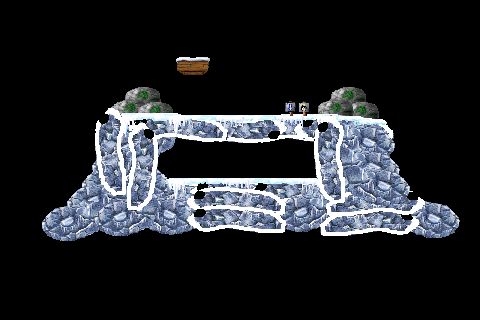

Pingus on Android
As I’ve continued hiring at
mFoundry
(if you live in the Bay Area,
check us out
), I’ve been very busy non-coding. As usual, that implies the need for a non-work programming project. As I mentioned
in my last post
, I’ve started digging into Android programming. I decided it would be interesting to try to do a game of some sort. Given that I have zero skill with graphics, I had to cheat a bit. I’m attempting to build an Android version of the
Pingus
game using the graphics and levels from their source code and the very cool Android game engine
AndEngine
.
The most straightforward approach to bringing Pingus to Android would probably be to do a native C port using the
Android NDK
, however I’m more interested in trying to build out the game logic. I don’t foresee myself being nearly as good about documenting the process as
Shamus Young at Twenty Sided
, but to prove I’m still alive and coding it seemed a good time to post
something.
AndEngine
AndEngine is an excellent open-source library for building 2D games using Android’s OpenGL ES support for improved function and performance. AndEngine has an excellent set of examples that can be installed directly from the Android Market. The examples do a decent job of showing how to use the library. I’m slowly finding my way around the library, however real documentation would be very helpful in truly understanding the library. With that said, I can’t complain too much about an excellent library that is completely free.
Parsing Resource Definitions
I had originally planned to package the Pingus level and resource definitions into the package, reading them at runtime. The Pingus level and resource definition files are defined using a subset of Lisp S-Expressions. While running under the emulator, it became clear that reading these files at runtime was going to be too expensive. After a couple of iterations, the resource definitions are currently read by a separate tool into a set of representative model objects. Those objects are then serialized into SQLite database packaged into the Android package. Even after moving to this model, it became necessary to take control over the serialize and deserialize logic to improve performances.
I should note that performance was fine without all of these tweaks on my Captivate, however I felt that the performance work would definitely be of benefit no matter what device was used.
Base Graphics
After getting the model object loading straightened out, I moved on to building the basic level graphics using AndEngine Textures, Texture Regions and Sprites. This was something I did not expect to be incredibly difficult, however I’m finding that not to be the case. Pingus reuses a number of images, with modifiers like rotate 90, rotate 90 flip and rotate 180.
Flipping Images
In digging around the internet, all examples of a horizontal “flip” operation suggest something like the following:
sprite.setScale(-1, 1); // Horizontal flip
I tried various combinations with a negative scale factor, all of which resulted in the sprite disappearing. Finally, I stumbled on to the answer in the AndEngine forums, using the texture region rather than the sprite.
sprite.getTextureRegion().setFlippedHorizontal(true);
90 Degree Rotation
90 Degree (and presumably 270 degree) rotations are proving difficult to get right. I’ve tried a couple of options to get this right. If I rotate 90 degrees with a rotation centered at (0,0), I end up with something offset primarily in the negative X direction.
{kind=link}
While I can compensate in this case using a hardcoded offset:
setPosition(position.x + 50, position.y);
I have no idea why this value works or how it may be tied to any of the image bounds. I’ve also tried rotating around the center of the image resulting in similarly bizarre results. When rotating around the image center, the offsets to get things in place were similarly questionable:
setPosition(position.x - 125, position.y + 125);
Until I can find the correct calculation that properly places the 90 degree rotations, I’m kind of stuck. Even with the hardcoded offsets, I know I’m not quite in the right spot, although it appears to be pretty close:

In order to get a better idea of where the actual problem images are located, I hacked up the troublesome image a bit, adding an ugly white border and a black spot in the upper-left corner. With this in place, it is at least clear where this image is located relative to all of the other images:

{kind=link}
With the outline, it is possible to pick out the specific image, but it does not give any further insights into the calculations to get those images in place.
What’s Next?
After spending a considerable amount of time trying to figure out the rotation offsets, it is probably a good time to step back for a bit and look elsewhere. Hopefully coming back to this problem after some down time, an explanation will reveal itself. In the meantime, adding the ability to zoom (multi-touch!) and pan within the level seems like a interesting next project that will give me a chance to dig further into the AndEngine support. In addition, it may also be useful in helping determine the correct location for the rotated items.
Hey Craig – so if you are rotating around 0,0 and if that is the top left corner, then if you rotate by 90 degrees in a clockwise direction, the rotation point will now be the top right corner, which may or may not be what you want. In that case you’d have to add (what was) the height to the x position to move the top left of the rotated image to the original location. Just a thought!
Steve,
Thanks. I think you were close. I hadn’t posted again because I was digging into multitouch zoom support. With zoom to 100% and the ability to drag around the scene, it was clearer that my original hardcoded numbers weren’t quite correct. Playing around with it a bit, I ended up getting a conversion that actually makes sense and works… a great combination!
setPosition(position.x – height, position.y + height);